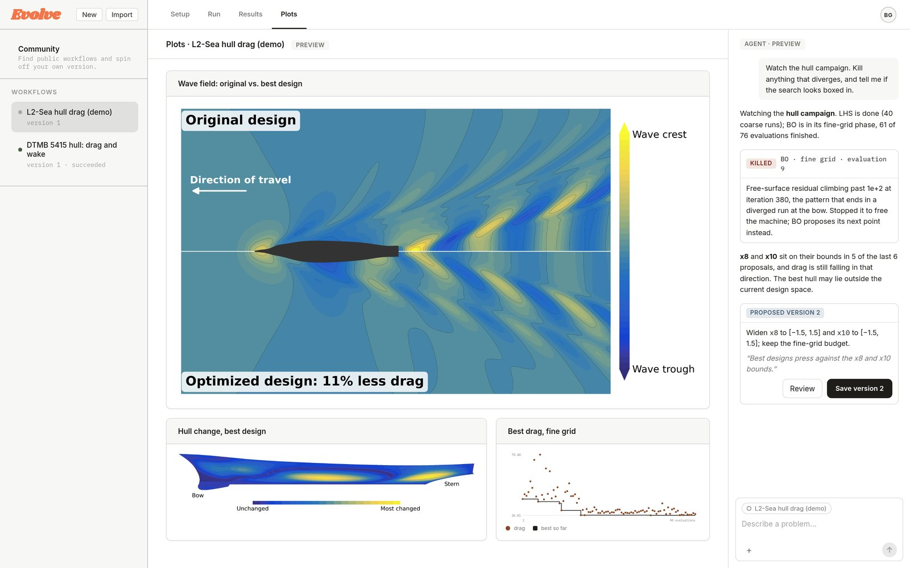

Computing Built for Discovery.


Arkaic enables discovery science with state-of-the-art numerics, distributed computational workflows, and trustworthy agentic orchestration.
01Product
Don’t just optimize, Evolve.
Built to drive loops around long-running simulations, Evolve specializes in large-scale multi-fidelity optimization, surrogate modeling, and the construction and tuning of physics AI models. Its unique meta-learning engine uses a corpus of prior campaign data to turbocharge new campaigns. Agents can help craft, scale, and mend your workflows, making Evolve the most effective tool for getting your work done.
What Evolve does.
- Scientific simulation software integration.
- Distributed workflows on managed HPC.
- Meta-learning engine for turbocharged campaigns.
- Multi-fidelity surrogate modeling.
- State-of-the-art multi-fidelity and high-dimensional Bayesian optimization.
- Agentic workflow orchestration and monitoring.
- Multi-objective optimization using trained surrogates.
- Performance-portable GPU acceleration.
- Free for non-commercial use.
How Evolve runs a study.
Evolve at work.

How Evolve compares.
| Capabilities | Evolve | Optuna | Ray on Anyscale | modeFRONTIER | optiSLang | HEEDS | CONVERGE |
|---|---|---|---|---|---|---|---|
| Drives external solversRuns third-party or in-house simulation codes as the evaluation step in an optimization loop, through connectors or user wrappers, not just the vendor’s own solver. | Yes | Yes | Yes | Yes | Yes | Yes | No |
| Parallel trials on managed computeRuns many trials concurrently on compute the vendor provisions and scales, without the user managing a cluster or writing the job-dispatch logic. | Yes | No | Yes | Partial | Partial | Partial | Partial |
| Learns from past studiesUses data or models from earlier studies to warm-start a new one, through transfer or meta-learning across campaigns, not just reusing a DoE within the same study. | Yes | Partial | Partial | Partial | No | Yes | No |
| Multi-fidelity surrogatesBuilds surrogates that fuse cheap low-fidelity and expensive high-fidelity results, such as co-kriging or multi-fidelity Gaussian processes, not just swapping one data source for another. | Yes | No | No | Yes | No | No | No |
| High-dimensional Bayesian optimizationRuns sequential Bayesian optimization with a probabilistic surrogate and an acquisition function, scaling to tens of variables or more, not just low-dimensional BO or a one-shot DoE. | Yes | Partial | Partial | No | Partial | No | No |
| Agentic workflow orchestrationLets AI agents monitor runs, stop failing ones, and propose changes to the study, directly or through an agent interface such as MCP, not just a help chatbot. | Yes | Yes | Partial | Partial | Partial | No | Partial |
| Free for non-commercial useOffers a free license for academic, research, or personal non-commercial use, not just discounted pricing or a time-limited trial. | Yes | Yes | Partial | Partial | Partial | Partial | Partial |
02Team
-
Brandon Gusto, PhD
Brandon is a former Navy civilian scientist at NUWC Newport and DoW SMART Scholar. He led projects in multi-fidelity Bayesian optimization and GPU-accelerated adaptive beamforming for sonar. An FSU-trained mechanical engineer, applied mathematician, and computational scientist, his doctoral work advanced wavelet-based adaptive mesh refinement approaches in the context of compressible and reacting flows, as well as ML sub-grid scale modeling.
-
Toan Tran
Toan is a research software engineer building scientific tools from statistical packages to full-stack data systems. At FSU, he analyzed large-scale in-vivo neural recordings and built a computer-vision labeling pipeline to extract neural clusters of motor activity in mice. At the University of Michigan, he collaborated with Stan developers on a Bayesian data analysis package, streamlining MRP workflows with visual analytics and a domain-specific model compiler.
Curious?
inquiries@arkaic.inc